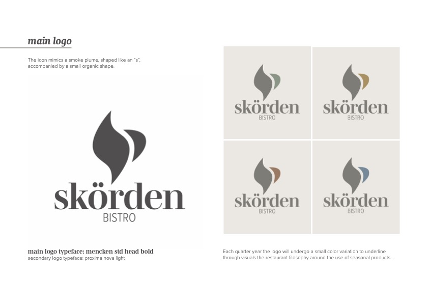
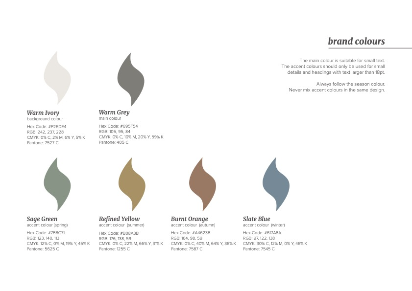
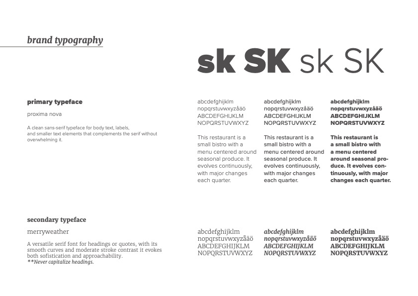
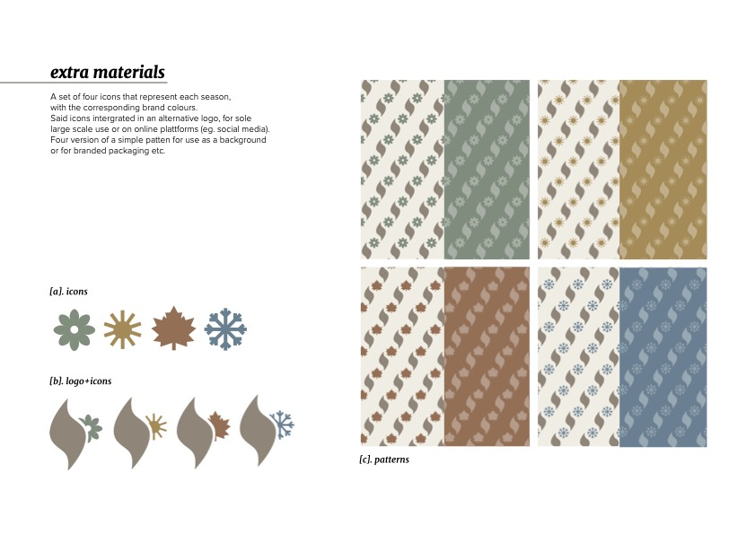
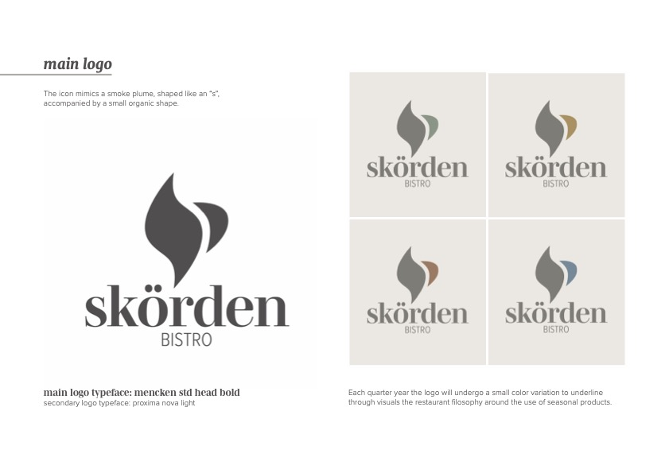
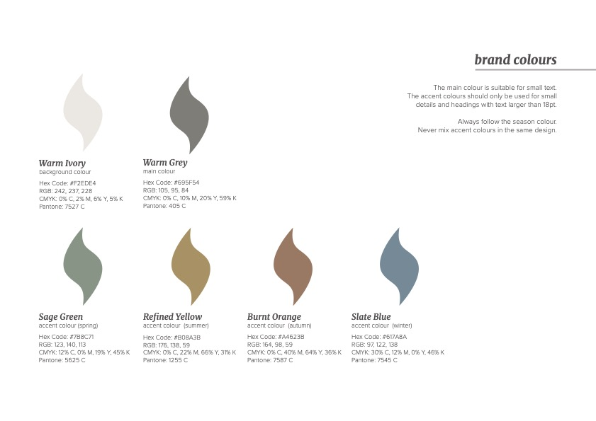
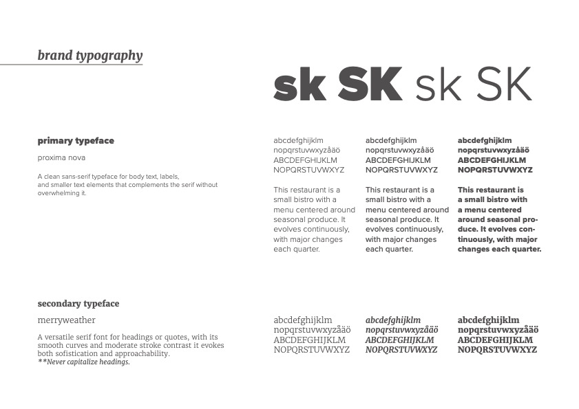
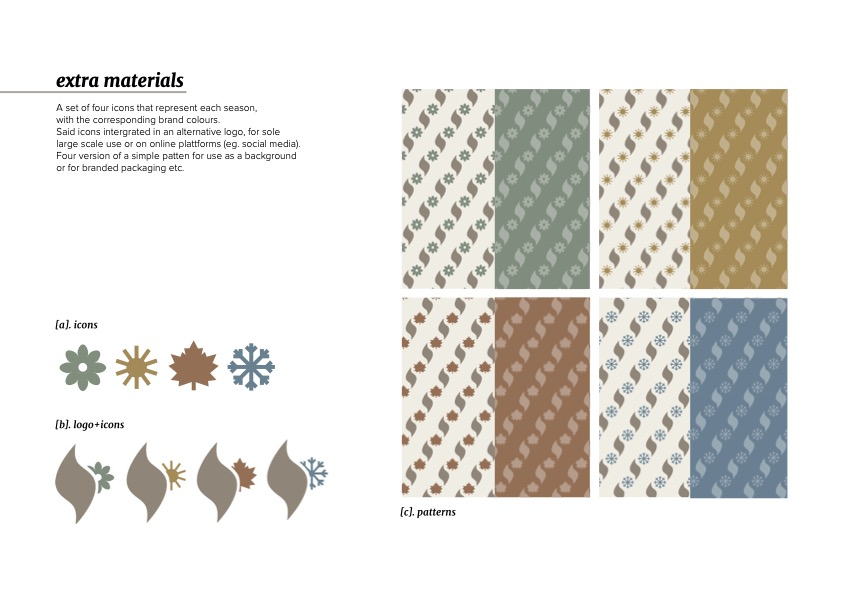

skörden - Brand Development
Brand development guide for a small swedish bistrò.
 







This restaurant is a small bistro with a menu centered around seasonal produce. It evolves continuously, with major changes each quarter to highlight the best fresh ingredients of the season. The ambiance is cozy and homey, featuring a somewhat maximalist and vintage-inspired interior, characterized by a heavy use of wood tones and plants. The visual identity aims to reflect both the elevated, curated nature of the menu and the elegant, minimalist style of a bistro, while still keeping a classic and timeless feel.